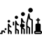

Rozdział 2 TOP 2000
2.1 Leef, André Hazes jr.

Op een vrijdag in de kroeg ergens in Amsterdam
Zat aan de bar met een glas een oude wijze man
Hij zei dat die nog maar een paar dagen had
Dus pak het leven, pak alles en ga er mee op pad
W piątek w pubie w Amsterdamie siedział
Stary mądry człowiek ze szklanką przy barze
Powiedział, że zostało mu jeszcze tylko kilka dni
Więc chwytaj życie, weź wszystko i ruszaj ze mną
En hij zei: ’’Leef, alsof het je laatste dag is
Leef, alsof de morgen niet bestaat
Leef, alsof het nooit echt af is
En leef, pak alles wat je kan’’
I rzekł: ’’Żyj, jakby to był twój ostatni dzień
Żyj, jakby nie miało być jutra
Żyj, jakby to nie był koniec do końca
I żyj, łap wszystko’’
En ga, a, a, a
A, a, a, a
A, a, a, a
Pak alles wat je kan
I leć, a, a, a
A, a, a, a
A, a, a, a
Łap wszystko, co możesz
En ga, a, a, a
A, a, a, a
Ga
Pak alles wat je kan
I leć, a, a, a
A, a, a, a
Leć
Łap wszystko, co możesz
Hij vertelde dat ’ie zich had gewerkt in het zweet
Geld verdiend als water maar nooit echt had geleefd
Z’n vrouw was bij hem weg, voor een ander ingeruild
Af en toe gelachen maar veel te veel gehuild
Opowiedział, jak się w życiu napocił przy robocie
Pieniądze spływały lekko ale nigdy nie żył naprawdę
Żona go opuściła zamieniła sobie na innego
Zbyt mało śmiał się a zbyt dużo się napłakał
Hij is zo vlug als water. On chwyta w biegu.
Ik wilde net op pad gaan. Właśnie miałem wyruszyć w drogę.
Gele gans zelf. Zażółć gęślą jaźń.
2.2 Een beetje verliefd, André Hazes

In een discotheek, zat ik van de week
En ik voelde mij daar zo alleen
’t Was er warm en druk, ik zat naast een lege kruk
Ik verlangde zo naar jou hier aan m’n zij
W jakiejś dyskotece byłem na tygodniu
I czułem się tam bardzo samotny
Było tam gorąco i tłoczno, siedziałem przy pustym stołku
Tak pragnąłem cię tutaj przy moim boku
Ja, ik denk nog steeds hoe het was geweest
Toen je naast me zat hier aan de bar
Ik vroeg: ‘’Drink je mee?’’, dat vond jij oké
Toen je proostend naar me keek werd ik zo week
Tak, wciąż się zastanawiam, jak to było
Gdy się do mnie przysiadłaś przy barze
Spytałem: ‘’Napijesz się ze mną?’’, zgodziłaś się
Kiedy na mnie spojrzałaś przy toaście, stałem się taki miękki
Een beetje verliefd, ik dacht een beetje verliefd
Als ik wist wat jij toen dacht, had ik nooit op jou gewacht
Als een kind zat ik te dromen deze nacht ben jij voor mij
Maar die droom ging snel voorbij
Trochę zakochany, myślałem trochę zakochany
Gdybym wiedział, co wtedy myślisz, nigdy bym na ciebie nie czekał
Jak małe dziecko ciągle marzyłem, tej nocy jesteś dla mnie
Ale ten sen szybko minął
Jij stond op en zei: ‘’Hou m’n plaatsje vrij
Ik moet even weg maar ben zo terug’’
Ach, die kruk bleef leeg tot ik in de gaten kreeg
Dat je wegging zonder mij, ik was nu alleen
Wstałaś i powiedziałaś: ‘’Zajmij mi miejsce
Muszę na chwilę wyjść, ale zaraz wrócę’’
Ach, ten stołek stał pusty, dopóki nie zauważyłem
Że odeszłaś beze mnie, teraz byłem sam
Weet je wat, ik ben er zat van. Wiesz co, mam tego dosyć.
Ik verlang ernaar met je alleen te zijn. Pragnę być z tobą sam.
Ik heb de wet aan m’n zij(-de). Prawo mam po swojej stronie.
Dat vind ik erg leuk. To mi się bardzo podoba.
We zitten te praten. Gadamy sobie.
Ik krijg dit in de gaten. Zdaję sobie sprawę z tego
2.3 Nacht, Guus Meeuwis and Kraantje Pappie

Nacht (Meeuwis and Pappie 2020) [Noc] Ćwierć wieku po Het is een nacht Guus Meeuwis wykonał “Nacht” wraz z raperem Kraantje Pappie. Posłuchajcie sami.
Het is een nacht
Die je normaal alleen in films ziet
Het is een nacht
Die wordt bezongen in het mooiste lied
Het is een nacht
Waarvan ik dacht dat ik hem nooit beleven zou
Maar vannacht beleef ik hem met jou oh oh
To jest taka noc
Którą widzisz zwykle tylko w filmach
To jest taka noc
O której mówi najpiękniejsza piosenka
To jest taka noc
O której myślałem, że jej nigdy nie przeżyję
A którą dziś przeżywam z tobą Ooo
Op de grond ligt Châteauneuf-du-Pape
De radio zacht, rond middernacht
Ik hoor Suus en Freek, een blauwe dag
En ik kijk hoe je slaapt, ik hou je vast
Want ik weet dat het niet lang meer duurt voor jij gaat
Ik snap dat jij me niet te dichtbij laat
En je weer vrijmaakt en je op tijd staat
Je twijfelt aan of ik wel echt meen wat ik heb gezegd
En of ik nog steeds wel de echte ben
En of ik niet ren naar 050 en je niet meer ken als een slechte vent
Maar vannacht is dat allemaal niet de case
Voor nu is het nog nooit zo mooi geweest
Jij en ik, the road can wait
En ben ik voor eerst opeens compleet
Na ziemi leży Châteauneuf-du-Pape
Radio cicho gra, jest koło północy
Słyszę Suus i Freek, jakiś niebieski dzień
Patrzę jak śpisz, przytulam cię
Bo wiem, że to nie potrwa już długo zanim wyjdziesz
Rozumiem, że nie pozwolisz mi się zbliżyć
En je weer vrijmaakt en je op tijd staat
Wątpisz, czy naprawdę mam na myśli to, co powiedziałem
I czy nadal jestem prawdziwy
I czy nie biegnę na 50 i już cię nie znam jak jakiś zły facet
Ale dziś w nocy to w ogóle nie o to chodzi
Jeszcze nigdy nie było tak pięknie
Ty i ja, droga może poczekać
Nagle po raz pierwszy jestem spełniony
Als het komt, zou ik steeds met je zijn
En als je wennen moet, begrijp ik baby, neem je de tijd
Hier leven we voor, plus cash en baguettes
En deze nacht heeft alles wat ik zocht op deze plek
Gdyby tak się stało, zawsze byłbym z tobą
A jeśli musisz się zastanowić, rozumiem to baby, nie spiesz się
Po to żyjemy, plus kasa i bagietki
I ta noc ma wszystko, co szukałem w tym miejscu
Hey schat, ik zou m’n kleine teen geven voor nog één nacht
Het is natuurlijk geen wonder dat ik je
Donderdag al bijzonder zag in het dons gepakt heb
En onze nacht werd er één als
Die van Leo en Kate was
We on top of the world, ben volledig gebrainwashed
But I like it, yeah, jij showt wat life is
En ja, je life is er een als Kylie’s
Maar net iets ronder en iets gezonder
Dat is precies hoe mijn vibe is, yeah
Jij bent de nicest
Bel de Bel, boy, bestel champagne
Fuck the prices, je rolt met Crane
Hej kochanie, oddałbym mój mały palec u nogi za jeszcze jedną noc
Oczywiście to nic dziwnego, że ja ciebie
Donderdag al bijzonder zag in het dons gepakt heb
A nasza noc stała się taką jedną,
Jaka należała do Leo i Kate
Jesteśmy na szczycie świata, mam kompletnie wyprany mózg
Ale lubię to, tak, pokazujesz, czym jest życie
I tak, twoje życie jest takie jak życie Kylie
Ale nieco bardziej zaokrąglone i nieco zdrowsze
Dokładnie taki jest mój klimat, tak
Jesteś najmilsza
Bel de Bel, chłopie, zamówmy szampana
Pieprzyć ceny, ty kręcisz z Crane
Maar vannacht beleef ik ’m met jou, oh
Ja ik hou alleen nog maar van jou
Ja ik hou alleen nog maar van jou
Ale dziś przeżywam ją z tobą Ooo
I kocham tylko wyłącznie ciebie
I kocham tylko wyłącznie ciebie
Châteauneuf-du-Pape fr. cenione wino
Suus en Freek duet wykonujący Blauwe Dag 2.5
Leo en Kate para z filmu Titanic
Kylie amerykańska celebrytka
Bel de Bel właść. fr. La Belle des belles
Crane od Kraantje, wykonawcy piosenki
2.4 Het is een nacht, Guus Meeuwis

Het is een nacht (Meeuwis 1995) [To jest taka noc] powstała po romantycznym weekendzie, jaki spędził autor ze swoją dziewczyną Valérie Gregoire w Brugii.
Je vraagt of ik zin heb in een sigaret
Het is twee uur ’s nachts
We liggen op bed
In een hotel in een stad
Waar niemand ons hoort
Waar niemand ons kent
En niemand ons stoort
Op de vloer ligt een lege fles wijn
En kledingstukken die van jou of mij kunnen zijn
Een schemering de radio zacht
En deze nacht heeft alles
Wat ik van een nacht verwacht
Pytasz, czy mam ochotę na papierosa
Jest druga w nocy
Jesteśmy w łóżku
W hotelu, w mieście
Gdzie nikt nas nie słyszy
Gdzie nikt nas nie zna
I nikt nam nie przeszkadza
Na podłodze leży pusta butelka po winie
I ubrania, które mogą być twoje lub moje
Półmrok, radio cicho gra
I ta noc ma wszystko
Czego oczekuję od nocy
Het is een nacht
Die je normaal alleen in films ziet
Het is een nacht
Die wordt bezongen in het mooiste lied
Het is een nacht
Waarvan ik dacht dat ik hem nooit beleven zou
Maar vannacht beleef ik hem met jou ohoh
To jest taka noc
Którą widzisz zwykle tylko w filmach
To jest taka noc
O której mówi najpiękniejsza piosenka
To jest taka noc
O której myślałem, że jej nigdy nie przeżyję
A którą dziś przeżywam z tobą Ooo…
Ik ben nog wakker en ik staar naar het plafond
En ik denk aan de dag lang geleden begon
Het zomaar er vandoor gaan met jou
Niet wetend waar de reis eindigen zou
Nu lig ik hier in een wildvreemde stad
En heb net de nacht van mijn leven gehad
Maar helaas er komt weer licht door de ramen
Hoewel voor ons de wereld
Vannacht heeft stil gestaan
Nadal nie śpię i wpatruję się w sufit
I myślę o tym dniu co zaczął się tak dawno
Tak po prostu przemija przy tobie
Nie wiedząc, gdzie zakończy się ta podróż
Teraz leżę tutaj w zupełnie obcym mieście
I właśnie miałem noc swojego życia
Ale niestety światło znów wpada przez okna
Ale co tam, świat dla nas
Zatrzymał się dziś w nocy
Maar een lied blijft slechts bij woorden
Een film is in scene gezet
Maar deze nacht met jou
Is levensecht
Ale piosenka to tylko słowa
Film jest na scenie zagrany
Ale dzisiejsza noc z tobą
Jest prawdziwa
En vannacht beleef ik hem met jou ohoh
En ik hou alleen nog maar van jou ohoh
En ik hou alleen nog maar van jou
I dziś przeżywam ją z tobą Ooo…
I kocham tylko wyłącznie ciebie Ooo…
I kocham tylko wyłącznie ciebie
Je bent trouwens eigenlijk wel geweldig. Nawiasem mówiąc, jesteś naprawdę świetny.
Als ik niet Pools was, zou ik geen Pools kennen. Gdybym nie był Polakiem, nie znałbym polskiego.
Heb ik daarvoor een vergunning nodig? Czy potrzebuję na to zezwolenie?
Waar kan ik meer te weten komen over …? Gdzie mogę dowiedzieć się więcej o…?
Wanneer … Kiedy ……..?
Ik heb zin in een borrel. Mam ochotę na drinka.
De lijn is bezet. Linia jest zajęta
Als ik meer tijd had, zou ik op je wachten. Gdybym miał/a więcej czasu, poczekałbym na ciebie.
Je moeder kan echt lekker koken. Twoja mama naprawdę potrafi dobrze gotować.
Dat is veel, he? To dużo, prawda?
Wanneer moet ik terugkomen? Kiedy muszę wrócić?
Zullen wij naar de duinen gaan? Może pójdziemy na wydmy?
2.5 Blauwe dag, Suzan & Freek

Blauwe dag (Stortelder et al. 2019) [Gorszy dzień] powstała po romantycznym weekendzie, jaki spędził autor ze swoją dziewczyną Valérie Gregoire w Brugii.
Weet je nog dat jij me zei dat wij nooit zouden vluchten als een van ons
Loopt door de regen en nooit meer kijkt naar hoe het leven is in de zon
Weet je nog dat jij me zei dat jij d’r altijd bent als ik je nodig heb
Nee, ik ben het niet vergeten, nee
Wat jij me ooit hebt gezegd
Want ik zie dat jij het moeilijk hebt en niet meer lachen kan zoals je vroeger deed
En nauwelijks in de gaten hebt dat je anders loopt dan dat je deed voorheen
Weet je nog dat jij me zei dat jij d’r altijd bent als ik je nodig heb
Nee, ik ben het niet vergeten, nee
Wat jij me ooit hebt gezegd
Czy pamiętasz, jak mi powiedziałaś, że nigdy nie moglibyśmy uciec, gdyby któreś z nas
Szło w deszczu i nie widziało więcej jakie jest życie w słońcu
Pamiętasz, jak mi powiedziałeś, że tam zawsze jesteś, kiedy ja cię potrzebuję
Nie, ja tego nie zapominałam, nie
Co mi kiedyś powiedziałeś
Ponieważ widzę, że masz trudności i nie możesz się uśmiechać tak jak kiedyś
I prawie nie zauważasz, że chodzisz inaczej niż kiedyś
Czy pamiętasz, jak mi powiedziałaś, że tam zawsze jesteś, kiedy ja cię potrzebuję
Nie, ja tego nie zapomniałam, nie
Co mi kiedyś powiedziałeś
Blauwe dag, als het dondert
En valt de hemel naar beneden, ben ik hier bij jou alleen
Blauwe dag, een seconde
Laten we dansen tot de morgen en de lucht weer opengaat
Fiets met jou mee door heel de stad
Als jij dat wil, nou, dan doe ik dat
Ik ben hier op je blauwe dag
Blauwe dag, een seconde
Laten we dansen tot de morgen en de lucht weer opengaat
Gorszy dzień, kiedy grzmi
I niebo spada w dół, jestem tu sam przy tobie
Gorszy dzień, jedna sekunda
Tańczmy do rana i niebo znów się otwiera
Jechać z tobą na rowerze przez całe miasto
Jeśli tego chcesz, teraz, to ja to zrobię
Jestem tu w twój gorszy dzień
Gorszy dzień, jedna sekunda
Przetańczmy tę noc, a niebo znów się przejaśni
Weet je nog dat jij me zei dat jij d’r altijd bent wanneer ik ergens val
Nu lig ik zelf op de grond en ben ik diegene zonder licht in een donker dal
Ik ging van de top van de wereld naar de plek waar ik niemand ken
Nee, ik ben het niet vergeten, nee
Wat jij me ooit hebt gezegd
Blauwe dag, als het dondert
En valt de hemel naar beneden, ben ik hier bij jou alleen
Pamiętasz, kiedy powiedziałeś mi, że zawsze tam jesteś, kiedy gdzieś upadam
Nu lig ik zelf op de grond en ben ik diegene zonder licht in een donker dal
Ik ging van de top van de wereld naar de plek waar ik niemand ken
Nee, ik ben het niet vergeten, nee
Wat jij me ooit hebt gezegd
Blauwe dag, als het dondert
En valt de hemel naar beneden, ben ik hier bij jou alleen
Fiets met jou mee door heel de stad
Als jij dat wil, nou, dan doe ik dat
Ik ben hier op je blauwe dag
Blauwe dag, een seconde
Laten we dansen tot de morgen en de lucht weer opengaat
Fiets met jou mee door heel de stad
Als jij dat wil, nou, dan doe ik dat
Ik ben hier op je blauwe dag
Blauwe dag, een seconde
Laten we dansen tot de morgen en de lucht weer opengaat
De lucht wordt donker. Niebo robi się ciemne.
De lucht klaarde op. Niebo się przejaśniło.
De hemel is blauw Niebo jest niebieskie.
Zijn ziel was in het hemel Jego dusza była w niebie.
Ik voel me blauw. Jestem przygnębiony.
Weet je nog? Czy pamiętasz?
Laten we haar alleen laten. Zostawmy ją w spokoju.
Ik denk dat wij goede vrienden zouden kunnen zijn. Myślę, że moglibyśmy być dobrymi przyjaciółmi.
Hij kan nauwelijks lezen. On ledwo umie czytać.
Houd deze koffer in de gaten. Obserwuj tę walizkę.
2.6 Dromen zijn bedrog, Marco Borsato

Dromen zijn bedrog (Fabrizio et al. 1994) [Sny są ulotne] jest uważana za jeden z najbardziej udanych singli w języku niderlandzkim wszech czasów.
Steeds als ik je zie lopen dan gaat de hemel een klein beetje open
Sterren, je laat ze verbleken met je ogen die altijd stralen
Jij kan de zon laten schijnen want je loopt langs en de wolken verdwijnen en als je lacht, lacht heel de wereld mee
Zawsze, kiedy widzę jak idziesz, wtedy odrobinę otwiera się niebo
Gwiazdy, sprawiasz że one bledną, swoimi oczami, które cały czas promienieją
Możesz pozwolić słońcu świecić, bo gdy przechodzisz chmury znikają a kiedy się śmiejesz, razem śmieje się cały świat
De meeste dromen zijn bedrog maar als ik wakker word naast jou dan droom ik nog
Ik voel je adem en zie je gezicht je bent een droom die naast me ligt
Je kijkt me aan en rekt je uit een keer in de zoveel tijd komen dromen uit!
Najczęściej sny są ulotne, ale kiedy budzę się obok ciebie, wciąż marzę
Czuję twój oddech i widzę twoją twarz, jesteś snem leżącym obok mnie
Patrzysz na mnie i się wyciągasz raz na jakiś czas marzenia się spełniają!
Jij moet me een ding beloven laat me nog lang in mijn dromen geloven
Zelfs als je even niet hier bent blijf in mijn slaap dan bij me
En als de zon weer gaat schijnen laat dan dat beeld wat ik heb niet verdwijnen. Als je zou gaan, neem je mijn dromen mee
Musisz mi obiecać jedno, pozwól mi jeszcze długo wierzyć w moje marzenia
Nawet jeśli cię chwilę tutaj nie ma, zostań ze mną kiedy śpię
A kiedy znów zaświeci słońce, nie pozwól fantazji którą mam zniknąć. Gdybyś szła, zabierz ze sobą moje marzenia
Dromen zijn bedrog. Sen mara, Bóg wiara. [prov. za Czochralski]
Met een klein beetje geluk. Przy odrobinie szczęścia.
De deur gaat niet open, hij klemt. Drzwi się nie otwierają, są zablokowane.
Kom met me mee. Chodź razem ze mną.
Als ik vragen mag. Jeśli wolno spytać.
Ik reik mijn hand naar je uit. Wyciągam rękę do ciebie.
De narcissen kwamen uit. Wypuściły żonkile.
Een keer in de zoveel tijd. Raz na jakiś czas.
Mag ik even binnenkomen? Czy mogę na chwilę wejść?
Ik blijf in slaap vallen. Ciągle zasypiam.
Wat heb je vannacht gedroomd? Co ci się śniło dzisiaj w nocy?
Waar droom je over? O czym marzysz?
2.7 Ik kan het niet alleen, De Dijk

Ik kan het niet alleen (Arzbach, Broek, and Lubbe 1989) [Nie mogę tego zrobić sam] to jedna z najbardziej znanych piosenek De Dijk do dziś odtwarzana przez wiele stacji radiowych w Holandii..
Elke morgen, elke middag
Elke avond, iedere nacht
Stel dat ik er wel maar jij er niet was
Dan was morgen morgen waarschijnlijk weer zo’n dag
En ik kan ’t niet
ik kan ’t niet
ik kan er niet omheen
k-k-kan ’t niet
ik kan ’t niet alleen
Natte ramen, kale muren
Lege flessen op de gang
Lange tanden, late uren
Weinig zon en veel behang
Ik heb het geprobeerd gedaan wat ik kan
maar alles gaat verkeerd
Ik ben ook maar een man
En ik kan het niet alleen
Co rano, co południe
Co wieczór, każdej nocy
Stel dat ik er wel maar jij er niet was
Jutro prawdopodobnie znowu taki dzień
En ik kan ’t niet
ik kan ’t niet
ik kan er niet omheen
k-k-kan ’t niet
ik kan ’t niet alleen
Mokre okna, gołe ściany
Puste butelki na korytarzu
Brak apetytu Późne godziny
Niewiele słońca i wiele tapet
Próbowałem zrobić, co mogłem
ale wszystko idzie źle
Jestem tylko człowiekiem
I nie mogę tego zrobić sam
Hij eet met lange tanden. On je niechętnie.
Beter laat dan nooit. Lepiej późno niż wcale.
We kunnen er niet omheen dat … Nie możemy omijać faktu, że …
2.8 O, o, Den Haag, Harry Klorkestein

O, o, Den Haag (Jekkers 1982) [Oj, oj, Haga] to piosenka uznawana za nieoficjalny hymn Hagi. Nazwa wykonawcy to anagram nazwy prawdziwego zespołu Klein Orkest.
Ik zou best nog wel een keertje net als vroeger in Moerwijk willen wonen
Na het eten een partijtje voetbal in de tuin, de ouders langs de lijn
In december met de hele buurt op jacht om kerstbomen te rausen
Op oudejaarsavond fikkie stoken, vooral die autobanden rookten fijn
Ik zou best nog wel een keertje met die ouwe naar ADO willen kijken
In het Zuiderpark, de lange zij, een warme worst, supporters om je heen
Lekker kankeren op Theo van den Burch en die lange van Vianen
Want bij elke lage bal dan dook die eikel er steevast overheen
O, o, Den Haag, mooie stad achter de duinen
De Schilderswijk, de Lange Poten en het Plein
O, o, Den Haag, ik zou met niemand willen ruilen
Meteen gaan huilen, als ik geen Hagenees zou zijn
Ik zou best nog wel een keertje net als vroeger een nachie willen stappen
Op mijn Puch een wijffie halen en daarna dansen in de Marathon
Na afloop op het Rijswijkseplein een harinkie gaan happen
De dag erna een kater dus naar Scheveningen, lekker bakken in de zon
Ik zou best nog wel een keertje … ach, wat leg ik toch te dromen
Want Den Haag is door de jaren zo veranderd, voor mij toch veel te vlug
Dat Nieuw Babylon moest dat er trouwens eigenlijk nou wel zo nodig komen?
Zo komt die ooievaar op de Vijverberg dus never-nooit meer terug
Bardzo chciałbym raz jeszcze, tak jak kiedyś, na Moerwijku zamieszkać
Po obiedzie przyciąć w nogę w ogrodzie, rodzice wzdłuż linii
A w grudniu z cała okolica na polowanie co by kilka choinek przyciągnąć
W Sylwestra rozniecać pożary, opony dymiły się szczególnie dobrze
Bardzo chciałbym raz jeszcze ze starszym na ADO popatrzeć
W Zuiderparku, długi bok, ciepła kiełbaska, kibice wokół ciebie
Cudne wyzwiska za Theo van den Burch i tym wysokim van Vianen
Ponieważ z każdą niska piłka, ten żołądź zawsze przelatywał nad nią
O, o, Haga, piękne miasto za wydmami
Schilderswijk, Lange Poten no i Plein
O, o, Haga, nie chciałbym się z nikim zamienić
Płakałbym od razu, gdybym nie był Hażaninem
Bardzo chciałbym raz jeszcze, tak jak kiedyś wyjść w noc
Zgarnąć laskę na mojego Pucha i potem tańczyć w Marathonie
Po wszystkim na Rijswijkseplein pójść śledzika przekąsić
Następnego dnia kac, wiec na Scheveningen cudownie smażyć się w słońcu
Bardzo chciałbym raz jeszcze … ach, o czym ja śnię
Ponieważ Haga przez te lata bardzo się zmieniła, jak dla mnie to zbyt szybko
Czy ten Nieuw Babylon musiał, tak miedzy nami, się tam pojawić?
Wiec nie pojawi się już nigdy więcej bocian na Vijverbergu
Ik heb zin in een borrel. Mam ochotę na drinka.
Nog een keer! Jeszcze raz!
Je bent trouwens eigenlijk wel geweldig. Nawiasem mówiąc, jesteś naprawdę świetny.
Als ik niet Pools was, zou ik geen Pools kennen. Gdybym nie był Polakiem, nie znałbym polskiego.
Heb ik daarvoor een vergunning nodig? Czy potrzebuję na to zezwolenie?
Waar kan ik meer te weten komen over …? Gdzie mogę dowiedzieć się więcej o…?
Dat is veel, he? To dużo, co?
Wanneer moet ik terugkomen? Kiedy muszę wrócić?
Zullen wij naar de duinen gaan? Może pójdziemy na wydmy?
De lijn is bezet. Linia jest zajęta
Als ik meer tijd had, zou ik op je wachten. Gdybym miał/a więcej czasu, poczekałbym na ciebie.
Je moeder kan echt lekker koken. Twoja mama naprawdę potrafi dobrze gotować.
2.9 Avond, Boudewijn de Groot

Avond (Groot and Nijgh 1997) [Wieczór] to piosenka uznawana przez Holendrów za najlepszą niderlandzkojęzyczną piosenkę wszechczasóW.
Nu hoef je nooit je jas meer aan te trekken
En te hopen dat je licht het doet
Laat buiten de stormwind nu maar razen in het donker
Want binnen is het warm en licht en goed
Hand in hand naar buiten kijkend waar de regen valt
Ik zie het vuur van hoop en twijfel in je ogen
En ik ken je diepste angst
Już nie musisz więcej zakładać kurtki
I się martwić, czy zapalą światła
Niech na dworze w ciemności szaleje wiatr
Bo w środku jest ciepło i widno i dobrze
Patrząc na dwór, gdzie pada deszcz trzymam cię za rękę
W twoich oczach widzę ogień nadziei i zwątpień
I znam twój najgłębszy lęk
Want je kunt niets zeker weten en alles gaat voorbij
Maar ik geloof, ik geloof, ik geloof, ik geloof, ik geloof in jou en mij
Bo niczego nie możesz być pewna, a wszystko przemija
Ale wierzę, wierzę, wierzę, wierzę, wierzę w ciebie i we mnie
En als je ’s morgens opstaat ben ik bij je
En misschien heb ik al thee gezet
En als de zon schijnt buiten gaan we lopen door de duinen
En als het regent gaan we t’rug in bed
Uren langzaam wakker worden, zwevend door de tijd
Ik zie het licht door de gordijnen
En ik weet, t’verleden geeft geen zekerheid
A kiedy wstaniesz rano, to ja będę przy tobie
I może herbata już będzie zrobiona
I jeśli na dworze będzie słonecznie, to pójdziemy na wydmy
A gdyby padało, to wrócimy do łóżka
Godziny powoli się budzą unosząc się w czasie
Widzę światło przez zasłony
I wiem, że przeszłość nie daje pewności
Ik doe de lichten uit en de kamer wordt nu donker
Een straatlantaarn buiten geeft wat licht
En de dingen in de kamer worden vrienden die gaan slapen
De stoelen staan te wachten op ’t ontbijt
En morgen wordt ik wakker met de geur van brood en honing
De glans van gouden zonlicht in je haar
En de dingen in de kamer, ik zeg ze welterusten
Vanavond gaan we slapen en morgen zien we wel
Maar de dingen in de kamer zouden levenloze dingen zijn
Zonder jou
Gaszę światło i teraz w pokoju robi się ciemniej
Latarnia na ulicy daje nieco światła
A rzeczy w pokoju stają się przyjaciółmi, którzy idą spać
Krzesła oczekują na śniadanie
A jutro obudzę się z zapachem chleba i miodu
Błysk złotych promieni słońca w twoich włosach
A rzeczą w pokoju, mówię dobranoc
Dzisiaj pójdziemy spać i zobaczymy się znowu jutro
Ale rzeczy w pokoju byłyby martwe
Bez ciebie
Doe het licht maar uit. Po prostu wyłącz światło.
Ik wil je nooit meer zien. Nie chcę cię nigdy więcej widzieć.
Ze liepen hand in hand. Szli trzymając się za ręce.
Die jongen toonde geen angst. Ten chłopiec nie okazywał strachu.
Het is te hopen dat … Należy mieć nadzieją, że …
De vlam zweeft vaak net boven het hout. Płomień unosi się często tuż nad drewnem.
Ga Maria wakker maken. Idź obudź Marię
Ik sta op het punt uit te gaan. Zaraz wychodzę.
De geur van lelies vulde de kamer. Zapach lilii wypełnił pokój.
De glans wordt gemeten volgens ISO 2813. Połysk mierzy się zgodnie z ISO 2813.
Ik zie je wel bij de auto. Do zobaczenia w aucie.
References
Arzbach, Nico, Antonie Broek, and Huub van der Lubbe. 1989. Ik Kan Het Niet Alleen. https://youtu.be/ltSsojzp90M.
Fabrizio, Maurizio, Riccardo Fogli, Guido Morra, Han Kooreneef, and Leo Driessen. 1994. Dromen Zijn Bedrog. https://youtu.be/CuA2U9iU6lQ.
Groot, Boudewijn de, and Lennaert Nijgh. 1997. Avond. https://youtu.be/ptGJ8wzeGDE.
Hoevelaak, Edwin van, Koen Jansen, Chiel Ottink, and Arno Krabman. 2015. Leef. https://youtu.be/2H0yWKdZM8g.
Jekkers, Harrie. 1982. O, O, Den Haag. https://youtu.be/ptGJ8wzeGDE.
Meeuwis, Guus. 1995. Het Is Een Nacht. https://youtu.be/BMqZIFVYUXw.
Meeuwis, Guus, and Kraantje Pappie. 2020. Nacht. https://youtu.be/MxkdVogPeF0.
Mol, Aart, Geertjan Hessing, Cornelis R. Bergman, Elmer F. Veerhoff, Erwin v. Prehn, and Andre G. Hazes. 1981. Een Beetje Verliefd. https://youtu.be/3kufNNxyACg.
Stortelder, Suzan, Arno Krabman, Freek Rikkerink, and Koen Jansen. 2019. Blauwe Dag. https://youtu.be/keYF1D0LVQk.